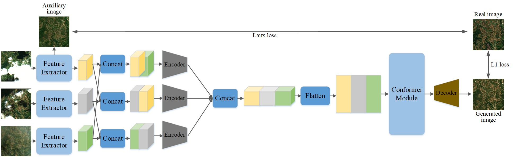
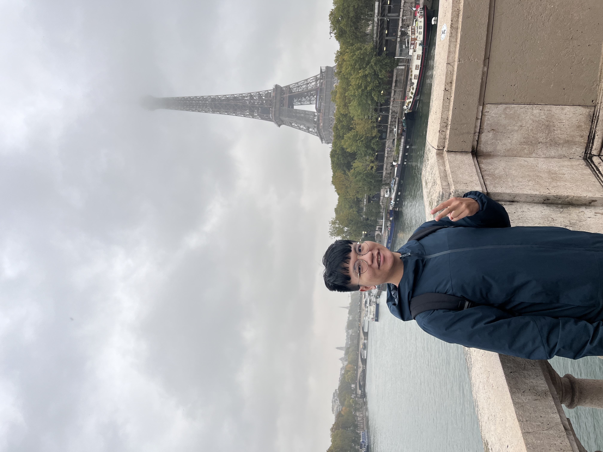
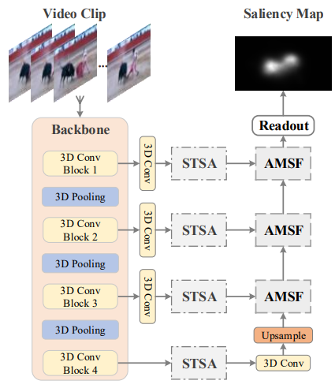
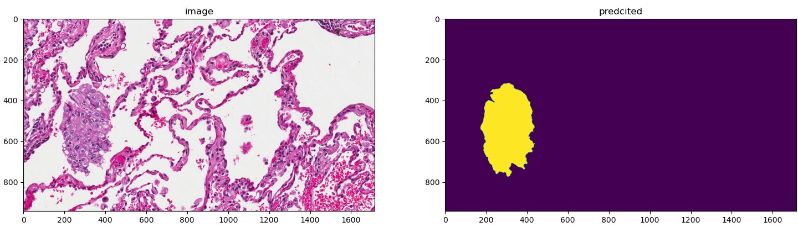
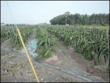

Generative · ICIP 2022
CTGAN
Cloud Transformer Generative Adversarial Network — published at IEEE ICIP 2022.
View on GitHub ↗(Allen)

I'm a Senior AI Engineer & Assistant Project Manager at CyberLink, specializing in computer vision, deep learning, and generative AI. My first stretch here was spent deep in Flux — training LoRA for object removal & replacement and product backgrounds, then Flux Kontext for human beauty effects.
Currently I guide team members building GenAI features and drive our adoption of agentic development. Before CyberLink, I shipped automotive AI at MobileDrive — projecting vehicle trajectories from front-view cameras, then quantizing and deploying the model on the Qualcomm 8295 platform for on-vehicle testing.
I earned my M.S. in Data Science from National Taiwan University (GICE) in 2023, advised by Prof. Pei-Yuan Wu, with 4+ years of research across deep learning, computer vision, and machine learning.

Cloud Transformer Generative Adversarial Network — published at IEEE ICIP 2022.
View on GitHub ↗
PyTorch implementation of the Spatio-Temporal Self-Attention Network for video saliency.
View on GitHub ↗
Lung adenocarcinoma pathology segmentation — 2/307 on the T-Brain private leaderboard.
View on GitHub ↗
Crop-status recognition by image classification — 3/428 on the AIdea private leaderboard.
View on GitHub ↗05 — Contact
Open to conversations about generative AI, computer vision, and shipping ML to production. The fastest way to reach me is email.
giluen.huang@gmail.com